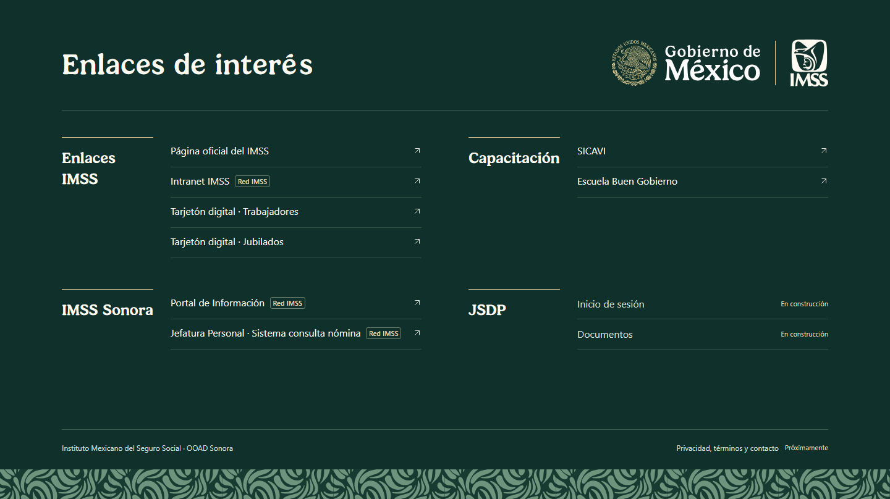
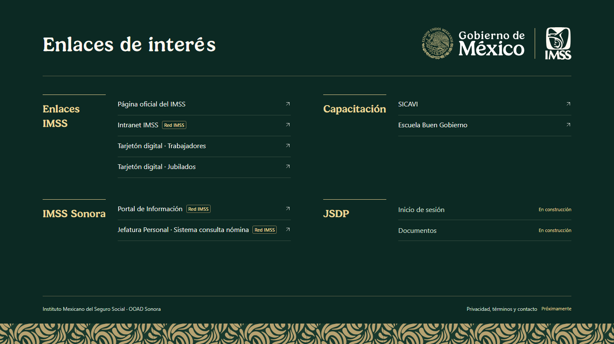
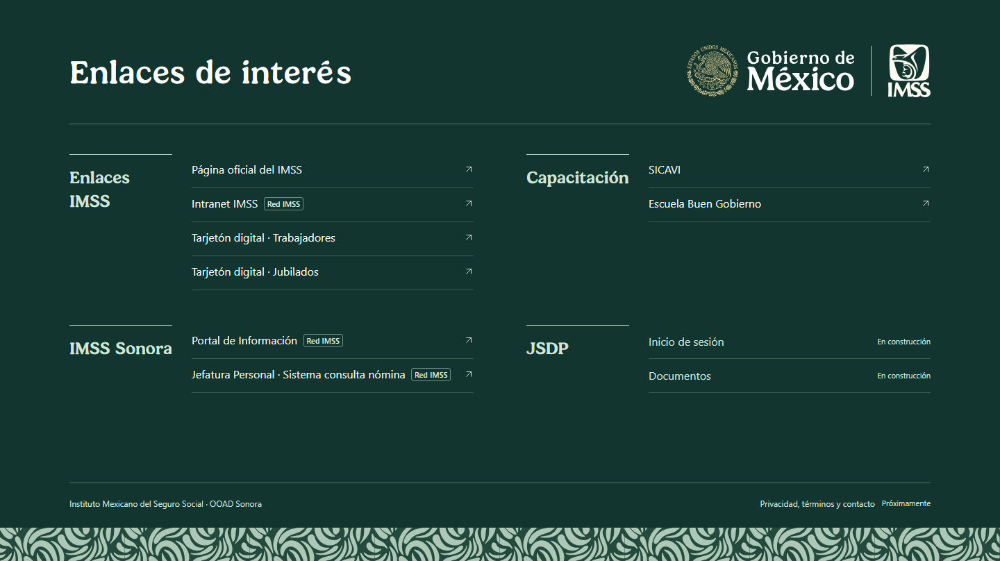

Tres versiones oscuras del footer
El acomodo actual se conserva. Cambian el verde de fondo y los acentos claros; el ornamento aparece únicamente en una franja inferior de 48 px, de ancho completo y sin degradado.
Las tres propuestas usan el logo blanco suministrado del Gobierno de México y una copia en marfil del logosímbolo del IMSS. Se mantienen los ocho enlaces y los dos accesos en construcción.
I · Verde institucional y marfil
El verde exacto de la tarjeta, letras marfil y una franja ornamental en verde claro. La opción más cercana a la referencia.



J · Verde profundo y oro suave
Un verde más profundo, títulos de categoría en oro claro y una franja inferior dorada. Mayor presencia institucional.



K · Verde bosque y salvia
Verde bosque con categorías y detalles en salvia clara; la franja inferior utiliza un contraste suave y fresco.
